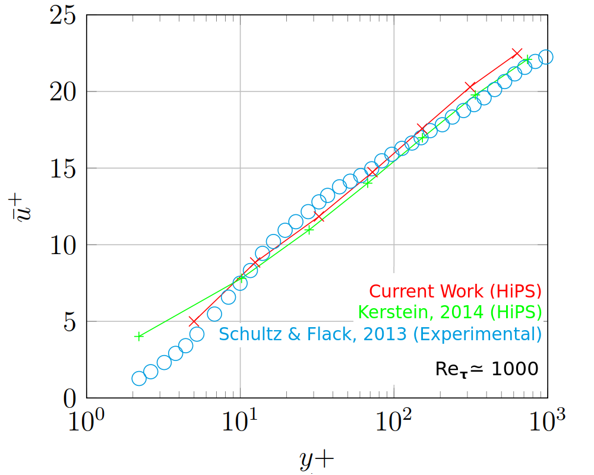
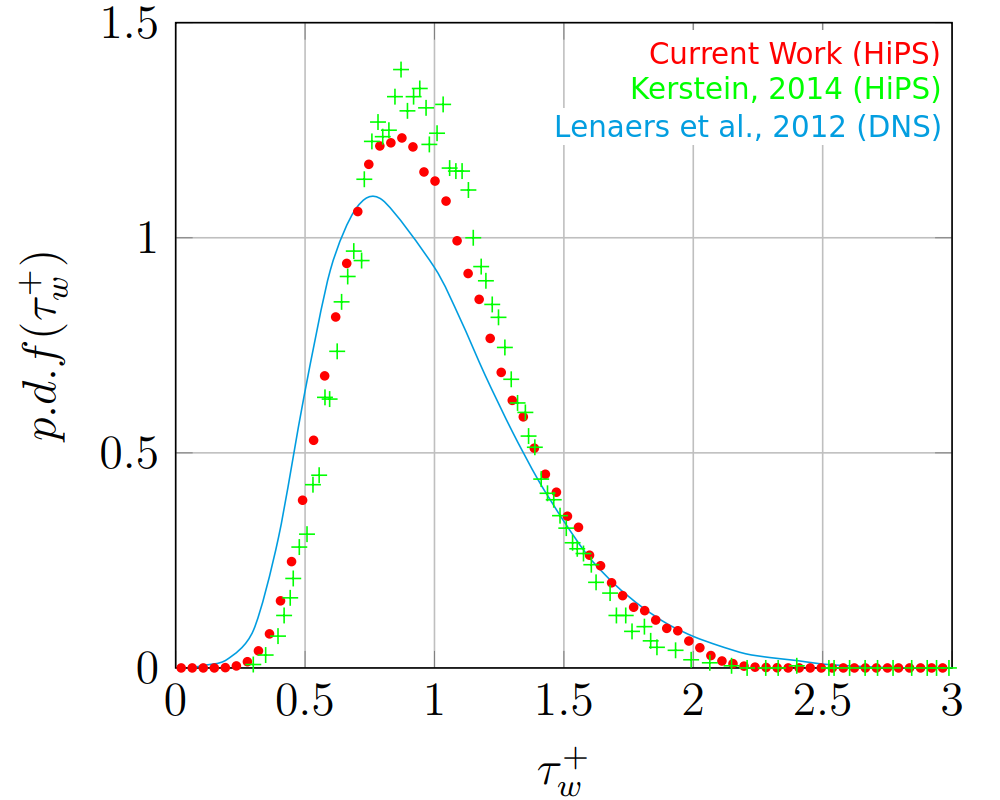

Hello
Towards a hybrid turbulent mixing model based on hierarchical
parcel-swapping and
one-dimensional turbulence
Pedro Pupo Sá da Costa Heiko Schmidt Lehrstuhl Numerische Strömungs- und Gasdynamik
Objectives
One Dimensional Turbulance
Hierarchical Parcel Swapping
Future Work
Discussion
- Generalize the XLES formulation to allow an implementation of ODT as a sub-grid model in external CFD codes.
- Develop alternative ODT models within this framework to improve overall performance or provide application specific advantages.
One Dimensional Turbulance
 \[\begin{gather}
\frac{\delta U_i}{\delta t}
= \nu \frac{\delta^2}{\delta x^2_j} U_i - EE - \phi
\label{eq:NavierStokesODT2}
\end{gather}\]
\[\begin{gather}
\frac{\delta U_i}{\delta t}
= \nu \frac{\delta^2}{\delta x^2_j} U_i - EE - \phi
\label{eq:NavierStokesODT2}
\end{gather}\]
Eddy Event

Hierarchical Parcel Swapping
\[\begin{gather}
\frac{\delta U_i}{\delta t} = ME - EE - \phi
\end{gather}\]
Eddy Event
Mixing Event



Future Work
Hips Results are only a function of the number of levels in the binary tree representation.
| C/T | 0.001 | 0.005 | 0.01 | 0.05 | 0.1 | 0.5 | 1 | 5 |
|---|---|---|---|---|---|---|---|---|
| 1 | 963 | 968 | 981 | 970 | 971 | 1006 | 962 | 972 |
| 2 | 976 | 1006 | 972 | 987 | 972 | 1012 | 944 | 984 |
| 3 | 985 | 1014 | 974 | 950 | 968 | 973 | 934 | 956 |
| 4 | 960 | 984 | 974 | 965 | 970 | 947 | 950 | 954 |
| 5 | 965 | 962 | 976 | 976 | 968 | 965 | 969 | 972 |
| 6 | 981 | 966 | 961 | 956 | 961 | 974 | 970 | 967 |
A new Mixing Event operator must consider diffusion in a more physical way.
\[\begin{gather} U^{t+1} = ME( U^t, \nu, \Delta x ) \end{gather}\]
Navier Stokes Equations:
\[\begin{gather}
\frac{ \delta u_{k,i} }{ \delta t } =
\nu\frac{ \delta^2 u_{k,i}}{ \delta x_k^2}
+ \nu\frac{ \delta^2 u_{k,i}}{ \delta x_i^2}
+ \nu\frac{ \delta^2 u_{k,i}}{ \delta x_j^2}
- \frac{ \delta ( u_{k,k} u_{k,i} ) }{ \delta x_k }
- \frac{ \delta ( u_{k,i} u_{k,i} ) }{ \delta x_i }
- \frac{ \delta ( u_{k,j} u_{k,i} ) }{ \delta x_j }
- \frac{1}{\rho} \frac{\delta p}{\delta x_i }
\end{gather}\]
Navier Stokes Equations with ODT model:
\[\begin{gather}
\frac{ \delta u_{k,i} }{ \delta t } =
\underbrace{
\nu\frac{ \delta^2 u_{k,j}}{ \delta x_k^2}
- \frac{ \delta ( U_{k,k} u_{k,i} ) }
{ \delta x_{k\phantom{j}}^\phantom{2} }
+ EE
- \frac{1}{\rho} \frac{\delta P}{\delta x_i }
}_{ \text{Inline: ODT advancement} }
+ \underbrace{
\nu\frac{ \delta^2 u_{k,i}}{ \delta x_i^2}
+ \nu\frac{ \delta^2 u_{k,i}}{ \delta x_j^2}
- \frac{ \delta ( u_{k,i} u_{k,i} ) }{ \delta x_i }
- \frac{ \delta ( u_{k,j} u_{k,i} ) }{ \delta x_j }
}_{ \text{Offline: Explicit advancement} }
\end{gather}\]
Navier Stokes Equations with HiPS model:
\[\begin{gather}
\frac{ \delta u_{k,i} }{ \delta t } =
\underbrace{
ME
- \frac{ \delta ( U_{k,k} u_{k,i} ) }
{ \delta x_{k\phantom{j}}^\phantom{2} }
+ EE
- \frac{1}{\rho} \frac{\delta P}{\delta x_{i} }
}_{ \text{Inline: HiPS advancement} }
+ \underbrace{
\nu\frac{ \delta^2 u_{k,i}}{ \delta x_i^2}
+ \nu\frac{ \delta^2 u_{k,i}}{ \delta x_j^2}
- \frac{ \delta ( u_{k,i} u_{k,i} ) }{ \delta x_i }
- \frac{ \delta ( u_{k,j} u_{k,i} ) }{ \delta x_j }
}_{ \text{Offline: Explicit advancement} }
\end{gather}\]
Discussion
-
1.
Kerstein, Alan. "Hierarchical Parcel-Swapping Representation of
Turbulent Mixing. Part 1. Formulation and Scaling Properties."
Journal of Statistical Physics 153.1 (2013).
2. Kerstein, Alan R. "Hierarchical parcel-swapping representation of turbulent mixing. Part 2. Application to channel flow." Journal of Fluid Mechanics 750 (2014): 421-463.
3. Lenaers, Peter, et al. "Rare backflow and extreme wall-normal velocity fluctuations in near-wall turbulence." Physics of fluids 24.3 (2012): 035110.